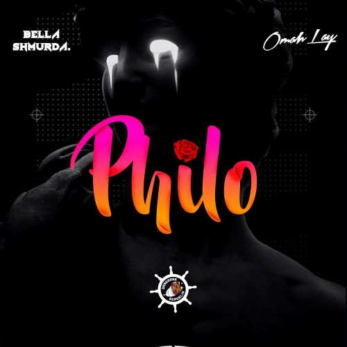
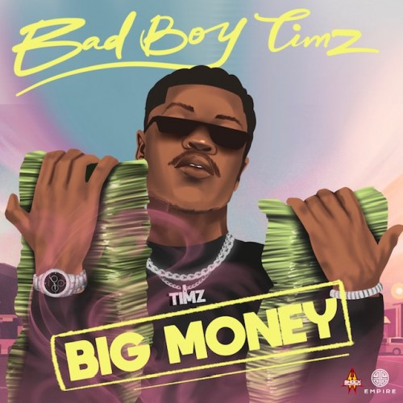
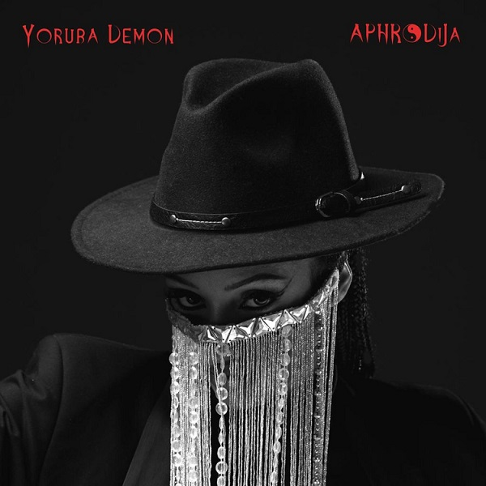
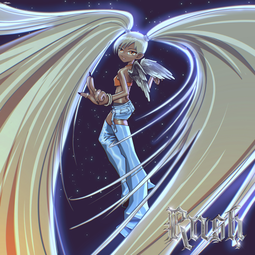
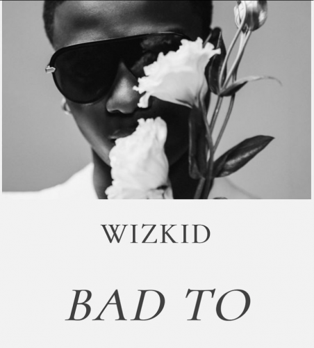
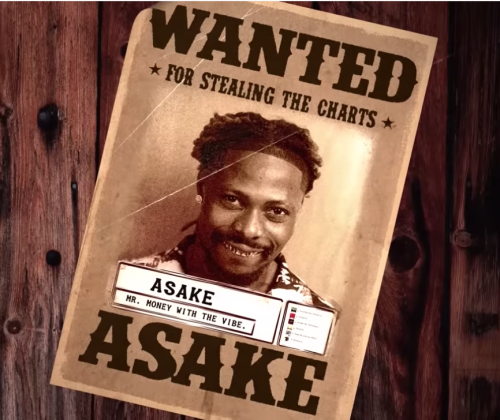

BELLA SHMURDA – PHILO
Street-hop singer, Bella Shmurda has released another banger titled, ‘Philo’,
featuring Afro-fusion star, Omah Lay.
The new tune serves as Bella Shmurda’s fifth output for the year as he pushes
for a debut album. It is a follow-up to his self-appraising record, New Born Fela,Listen.
SEP.19.22
.jpg)
CKAY – MMADU
In anticipation of his forthcoming studio album, Ckay has unveiled a solo mid-tempo
pop groove tagged, ‘Mmadu’.
Produced by Ckay himself and renowned beatmaker, P2J, the Love Nwantiti
delivered his usual love-themed phenomenon, grounded in soft and appealing lyrics, Listen.
SEP.19.22
.jpg)
ZLATAN – JABOTI
Jaboti is a jam by an award-winning and talented
“Zlatan”. The song is trending on TikTok and doing great numbers on dsp,Listen.
'Yoruba demon is her debut entry into the year. Listen
SEP.19.22

BAD BOY TIMZ – BIG MONEY
Following his successful single – Iz going, Afrobeat and dance artist Bad Boy Timz has released
a follow up single from his anticipated album No Bad Boy No Party.
The Tempoe produced song is an Afro-Pop record with element of Amapiano. Listen
SEP.19.22
.jpg)
IYANYA – ONE SIDE
Iyanya doesn't look like slowing down this quater,just after releasing a nice tune with
Davido and Kizz Daniel, Iyanya drops yet another dope track tittle one side and this one
is a jam...listen.
SEP.19.22

DI'JA – YORUBA DEMON
Di’Ja has returned to the music scene with a new single titled, ‘Yoruba Demon’.
'Yoruba demon is her debut entry into the year. Listen
SEP.19.22

AYRA STAR - RUSH
Rush is ayra starr first single of the year following the success of her debut studio album, ’19 & Dangerous’ containing hit
songs like ‘Bloody Samaritan’, Beggie Beggie featuring Ckay, Fashion Killer and
many more, this one is dope.
SEP.16.22
LOJAY - LEADER
Lojay is back with a vibing new single ‘Leader!’
The release was followed by a futuristic music visual directed by Uax.
SEP.16.22

WIZKID - BAD TO ME
Machala, Wizkid finally drops his long-awaited single titled, ‘Bad To Me‘.
Wizkid jumps on the South-African originated Amapiano sound and
Being his debut entry into the year 2022, the song serves as a follow-up
to his multi-award winning fourth studio album, MIL (Deluxe).
SEP.16.22

ASAKE - ORGANISED
YBNL/EMPIRE star Asake drops new single 'organised',this song his off Asake long-awaited debut album,
Mr. Money With The Vibe, enlisting the talented Magicstick for the production.
SEP.16.22